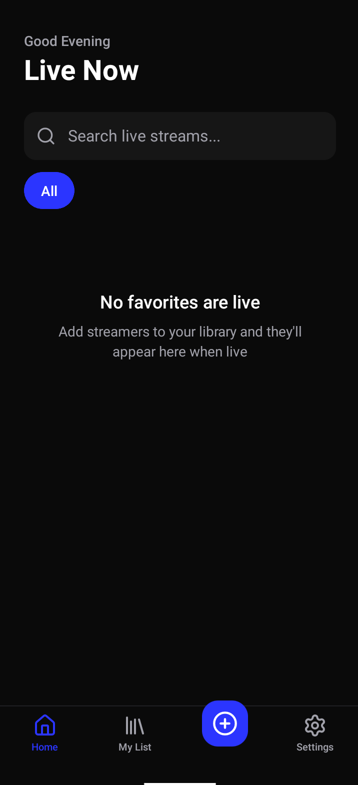
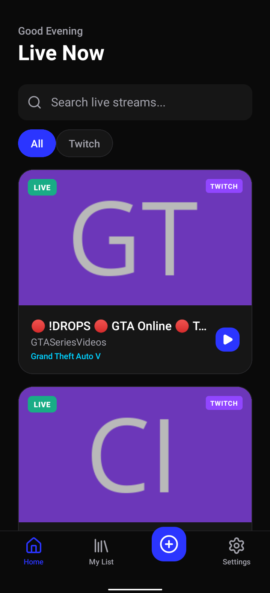
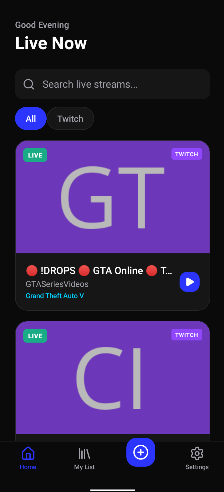
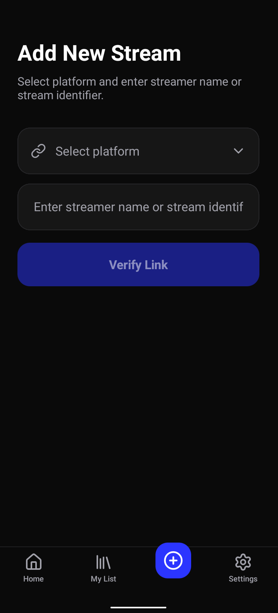
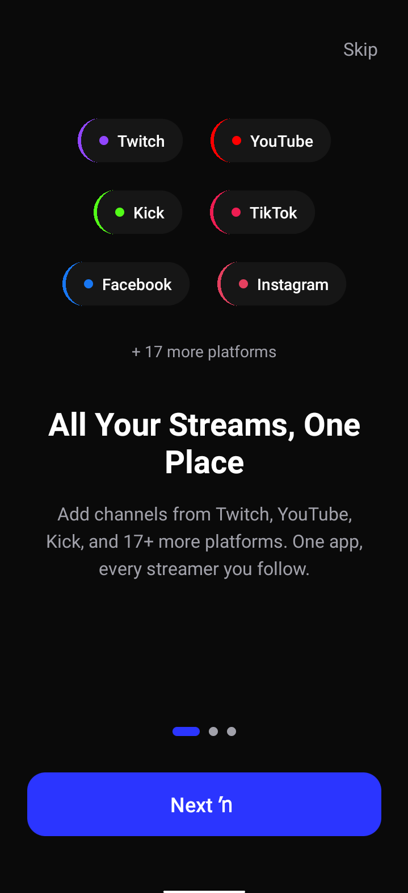
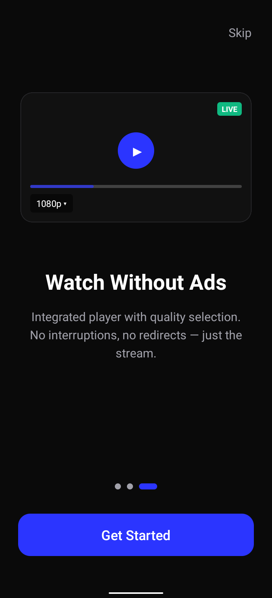

01
Live Now tab
One screen shows only who's streaming right now. Filter by platform, search by name, pull to refresh. Your watchlist, at a glance.

Open source · Privacy-first · Free forever
Add your favorite channels from Twitch, YouTube, Kick, and 20+ platforms. Get notified when they go live. Watch directly in the app — no account required.

Works with your favourite platforms
No accounts, no cloud sync, no data collection. Your favorites live on your device — period.
One screen shows only who's streaming right now. Filter by platform, search by name, pull to refresh. Your watchlist, at a glance.

Every saved channel, online or offline status, full add and remove management. Your library, synced to nothing — it just lives on your phone.

Add streams from Twitch, YouTube, Kick, TikTok, Facebook, Instagram, and dozens more. One app for every platform you follow.

Native video playback with quality switching, picture-in-picture, and deep links to open streams in their official apps.
Point the app at your own TukiWatch API instance via QR code or deep link. No rebuild required. Run it on your server, your terms.
Configure a Twitch Turbo token on your backend for ad-free streams. The app respects your settings and plays what you pay for.
No accounts. No cloud. No analytics. Your favorites are stored in local SQLite. We don't know who you are, what you watch, or where you stream from.
Real screenshots from the app. No mockups, no renderings.

Onboarding

Setup
Live Now
My List
Add Stream
Four steps. No account. No credit card.
Get the latest APK from the button above. No Play Store — direct download, always up to date.
The app uses our hosted API by default. Or point it at your own instance via QR code or deep link.
Search or paste URLs from Twitch, YouTube, Kick, and 20+ other platforms. They save locally.
Check the Live Now tab whenever you want. Tap a stream to play in-app with quality switching.
TukiWatch is free and open-source. Supporters get higher rate limits and early access. Every subscription funds continued development.
Download TukiWatch for Android — free, open-source, no account required.